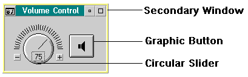

The application programming model for an OS/2 multimedia application is an extension of the OS/2 Presentation Manager programming model, providing both messaging and procedural programming interfaces. OS/2 multimedia API procedures allow applications to manage data and control devices while messages from the OS/2 multimedia system notify applications of asynchronous events.
The media control interface provides a view of the OS/2 multimedia system to both application developers and users that is similar to that of a video and audio home entertainment system. Operations are performed by controlling the processors of media information, known as media devices. Media devices can be internal or external hardware devices, or they can be software libraries that perform a defined set of operations by manipulating lower-level hardware components and system software functions.
Multiple media devices can be used in an operation. For example, the playback of an audio compact disc can be implemented by coordinating the control of a compact disc player and an amplifier-mixer device.
The Media Device Manager (MDM) shown in the following figure provides resource management for media devices and enables the command message and command string interface. The Media Device Manager provides device independence to an application developer.
┌───────────┐ ┌───────────┐ ┌───────────┐ ┌───────────┐ ┌───────────┐ ┌───────────┐ ┌───────────┐
│ Data │ │ │ │ Media │ │ │ │ Volume │ │ CD │ │ Digital │
│Converter │ │ Install │ │ Players │ │ Setup │ │ Control │ │ Player │ │ Audio │
└┬──────────┘ └─────┬─────┘ └─────┬─────┘ └─────┬─────┘ └─────┬─────┘ └─────┬─────┘ └─┬─────────┘
│ │ │ │ │ │ │ Applications
-│- - - - - - - - - │ - - - - - - │ - - - - - - │ - - - - - - │ - - - - - - │ - - - - │ - - - - - - - - - - -
│ ┌─────────────┴─────────────┴─────────────┴─────────────┴─────────────┴─────────┴─────────────────────┐
│ │ Media Device Manager Interface Layer │
│ └──────┬──────────────┬──────────────┬──────────────┬──────────────┬──────────────┬──────────────┬────┘
│ │ │ │ │ │ │ │
│ ┌─────┴──────┐ ┌─────┴──────┐ ┌─────┴──────┐ ┌─────┴──────┐ ┌─────┴──────┐ ┌─────┴──────┐ ┌─────┴──────┐
│ │ CD-ROM/XA │ │ CD Audio │ │Wave Audio │ │ Sequencer │ │Digitalvideo│ │ Amp/Mixer │ │ Videodisc │
│ │ Driver │ │ Driver │ │ Driver │ │ Driver │ │ Driver │ │ Driver │ │ Driver │
│ └─────────┬┬─┘ └─┬──────┬───┘ └────────┬───┘ └────┬───────┘ └───┬────────┘ └┬─┬─────────┘ └─────┬──────┘
│ Application ││ │ │ └────────┐ │ │ │ │ │
│ or ││ │ └─────────────────────┐ │ │ ┌───────────┘ │ │ │
│ Media Driver │└─────┼──────────────────────────┐ │ │ │ │ ┌─────────────────────┘ └───────┐ │
│ │ ┌─┘ │ │ │ │ │ │ │ │
┌┴────────┐ │ │ Stream Handlers │ │ │ │ │ │ ┌───┴────┐ │
│ MMIO ├───┐ │ │ ┌──────────────┐ │ │ │ │ │ │ ┌──────────────┐ │ Audio │ │
│ Manager │ │ │ │┌─┤ File System │ │ │ │ │ │ │ ┌─┤ Audio ├─────┤ VSD │ │
└────┬────┘ └──┼────┼┤ └──────────────┘ │ │ │ │ │ │ │ └──────────────┘ │ │ │
┌────┴─────────┐ │ ││ ┌──────────────┐ │ │ │ │ │ │ │ ┌──────────────┐ └───┬────┘ │
│I/O Procedures│ │ ││ │ Multi-track ├─┐ ┌────┴─┴─┴─┴─┴─┴┐ ├─┤ Memory │ │ │
└────┬─────────┘ │ ││ └──────────────┘ │ │┌─────────────┐│ │ └──────────────┘ │ │
│ │ ││ ┌──────────────┐ ├───┼┤ Sync/Stream ││ │ ┌──────────────┐ │ │
│ │ │└─┤ Video ├─┤ ││ Manager DLL ├┼───┼─┤ CD-ROM/XA │ │ │
│ └───┐│ └──────────────┘ │ │└──────┬──────┘│ │ └──────────────┘ │ │
│ ││ ┌──────────────┐ │ │ │ │ │ ┌──────────────┐ │ │
┌──┴────────┐ ││ │ MIDI Mapper ├─┘ │ │ │ └─┤ CD/DA │ │ │ RING 3
│File System│ ││ └──────────────┘ │ │ │ └──────────────┘ │ │ DLL
- -│- - - - - -│- - - ││- - - - - - - - - - - -│- - - -│- - - -│- - - - - - - - - - - - - - - │ - - - - │- - - - -
│FAT/HPFS/XA│ ││ │┌──────┴──────┐│ │ │ RING 0
└─┬────┬──┬┬┘ ││ ││ Sync/Stream ││ │ │ PDD
│ │ │└──────┐││ ││ Manager PDD ││ │ │
┌───┴───┐│┌─┴─────┐ │││ │└─────────────┘│ │ IOCtl │
│ Hard │││ R/W │ │││ └───────┬───────┘ │ │
│ Disk │││Optical│ │││ │ │ │
│ PDD │││ PDD │ │││ │ │ │ IOCtl
└─┬─────┘│└─┬─────┘ │││ │ │ │
│ │ │ │││ ┌───┴─────────────────────┐ │ │
│ │ └┐ │││ ┌───┤Ring 0 Stub Device Driver├────────────────┤ │
│ │ │ │││ │ └───────────┬─────────────┘ │ │
│┌─────┴──┐│ ┌───┴┴┴───┐ │ ┌───────────┼────────────┐ │ │
││Diskette││ │CD-ROM/XA│ IDC │ │┌──────────┴───────────┐│ │ │
││ PDD ││ │ PDD │ │ ││Common Audio Interface├┼─────────────────┘ │
│└─┬──────┘│ └───┬─────┘ │ │└──────────┬───────────┘│ │
│ │ │ ┌─┴──────────┐ │ │ ┌─────┴─────┐ │ ┌───┴───┐
│ │ │ │Generic SCSC│ │ │ │ OEM Audio │ │ │ OS/2 │
│ │ └────┤ DD │ └───┼─────┤ Device │ │ │ COM │
│ │ └─────┬──────┘ │ │ Driver │ │ │ PDD │
│ │ │ │ └─────┬─────┘ │ └───┬───┘
│ │ │ └───────────┼────────────┘ │
- -│- │ - - - - - - - - -│- - - - - - - - - - - - - - - - - - -│- - - - - - - - - - - - - - - - - - - - │- - - -
│ └────────┐ ├─────────┐ │ │
┴ ┴ ┴ ┴ ┌───┴─────┐ RS-232
Hard Diskette Optical CD-ROM │OEM Audio│
Drive Drive Drive Drive └──────┐ │ Physical
└──┘ Devices
Refer to the OS/2 Multimedia Subsystem Programming Guide for information on multimedia subsystem programming including media drivers and stream handlers.
To assist you in creating a standardized user interface for your OS/2 multimedia application, OS/2 provides multimedia window controls, which have been implemented in OS/2 multimedia applications such as Volume Control. See the following figure.
Graphic buttons are two-state buttons that can be toggled up and down. They can display text, or graphics, or both. They can also be animated. Their versatility makes graphic buttons ideal to use for device control panels.
Circular sliders lend realism to your panel by providing familiar-looking dials. The dials are easy to operate and do not hog screen real estate.
Secondary windows provide a sizeable dialog window to contain your multimedia device controls.